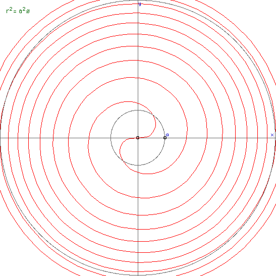

Horn
Graphics by Paul Bourne
March 2002
|
x = (2 + u cos(v)) sin(2 pi u)
y = (2 + u cos(v)) cos(2 pi u) + 2 u
z = u sin(v)
0 <= u <= 1, 0 <= v <= 2pi
|
Crescent
By Paul Burke
August 2002
|
x = (2 + sin(2 pi u) sin(2 pi v)) sin(3 pi v)
y = (2 + sin(2 pi u) sin(2 pi v)) cos(3 pi v)
z = cos(2 pi u) sin(2 pi v) + 4 v - 2
0 <= u <= 1, 0 <= v <= 1
|
Mathematical Sea Shell
Created by Paul Bourke
May 1989
Modelling Springs
Written by Paul Bourke
November 2000
|
r1 = 0.25, r2 = 0.25, periodlength=3.0, cycles = 4
Introduction
This note describes one of many ways to describe a spring. The method
used here is chosen because of the ease in which it can be used to
describe a spring in a format suitable for computer modelling and rendering
packages.
|
|
|
r1 = 0.5, r2 = 0.5, periodlength=1.5, cycles = 3
Formula
The formula below gives a point on the surface of a spring in Cartesian
coordinates. It is a parametric equation in terms of parameters u and v.
Both range from 0 to 2 pi, increasing u will give multiple windings.
x = [1 - r1 * cos(v)] * cos(u)
y = [1 - r1 * cos(v)] * sin(u)
z = r2 * [sin(v) + periodlength * u / pi]
Using these formula to create the 4 vertices of facets is fairly
straightforward, see the C source code given below. Basically one
evaluates the function for the parameters (u,v), (u+du,v), (u+du,v+dv),
(u,v+dv) where du and dv are small increments, the exact amount
depends on how smoothly one wants the surface to be represented.
|
|
|
r1 = 0.2, r2 = 0.2, periodlength=1.0, cycles = 3
Examples
The examples on the right illustrate a small subset of the springs
that can be created using the above formula.
The parameters shown in red beside each example should make sense.
For example, the number of cycles can be counted on the springs.
The length of one winding is called the periodlength. The two
radii determine the cross-section of the spring, circles for
when r1 = r2 and squashed rings when r1 != r2.
|
|
|
r1 = 0.2, r2 = 0.5, periodlength=1.5, cycles = 3
Extensions
Some exercises for the reader.....(1) this can easily be turned into
a spring spiral by scaling the x and y values by some function of u.
(2) Many rendering programs might insist on descriptions of solid
objects in which case a cap will be needed on the ends of the spring.
(3) The resolution of the facet approximation could be automatically
determined by the number of cycles.
|
|
|
r1 = 0.5, r2 = 0.2, periodlength=1.5, cycles = 5
Source code
A simple piece of C code is given here:
spring.c. It creates a faceted approximation
to a spring including the calculation of unit normals for smooth
shading. In this example the facets are written in
geom format, it should be easy
to modify the code to export in a format suited to your application.
The images given here were rendered using OpenGL.
|
|
Suggested improvement by Stefan Potrykus
It is pointed out that a distortion occurs for large values of periodlength.
The proposed correction for the value of z is as follows:
z = r2 * sin(v) * sqr(1+(periodlength / pi)*(periodlength / pi)) + periodlength * u / pi
Alternatively reformulated as follows
x = [R - r * cos(v)] * cos(u)
y = [R - r * cos(v)] * sin(u)
z = r * sin(v) * sqr(1 + h2/R2) + h * u
where h = periodlength / pi
Or alternatively
x = [R + r * cos(v)] * cos(u) + h * r * sin(v) * sin(u) / w
y = [R + r * cos(v)] * sin(u) - h * r * sin(v) * cos(u) / w
z = h * v + 2 * pi * R * r * sin(v) / w
where w = sqrt((2 * pi * a)2 + h2)
|
Dini's Surface or Twisted Pseudo-sphere
Written by Paul Bourke
October 1995
Surface of constant curvature (negative).
Named after Ulisse Dini
|
x = a cos(u) sin(v)
y = a sin(u) sin(v)
z = a (cos(v) + log(tan(v/2))) + b u
0 <= u, 0 < v
|
|
Appeared on the cover of the Graduate Study in Mathematics, Western Kentucky University.
|
| |
|
Appeared on stickers for the MAA
(Mathematical Association of America).
|
Equiangular spiral
Also known as the logarithmic spiral
Fermat's spiral

Parabolic spiral
Hyperbolic spiral
Also known as the reciprocal spiral
Lituus spiral
Sinusoidal spiral
Square Archimedes spiral
Cornu Spiral
Also known as Clothoid and Eulers Spiral
The equation (a function of L) is given by the following,
called the Fresnel integrals from their applications in
optics.
These curves were most likely first studied Johann Bernoulli in the 1690's.
Tanh Spiral
By Paul Bourke
January 2001
|
x = sinh(2 t) / (cos(2 a t) + cosh(2 t))
y = sin(2 a t) / (cos(2 a t) + cosh(2 t))
-pi/2 <= t <= pi/2, a > 0 (eg: 2)
|
Coth Spiral
By Paul Bourke
January 2001
|
x = -sinh(2 t) / (cos(2 a t) - cosh(2 t))
y = sin(2 a t) / (cos(2 a t) - cosh(2 t))
-pi/2 <= t <= pi/2, a > 0 (eg: 4)
|
Helix
By Paul Bourke
January 2001
|
x = cos(t)
y = sin(t)
z = a t
0 < t < 4 pi, a = 0.2 (for example)
|
|